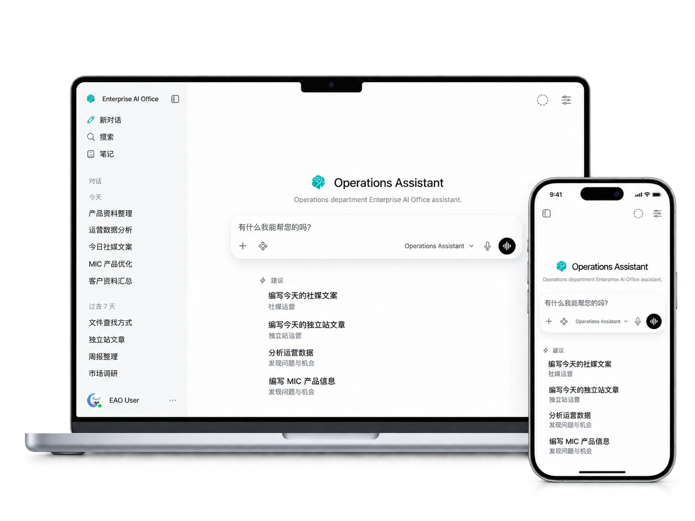

销售
- 产品与历史资料
- 客户 / 市场研究
- 回复与销售材料


判断、审批和正式对外动作仍然由人负责。
不同部门使用各自获准的知识、文件、工具和权限范围。
同一套 EAO，根据部门边界组合不同的企业上下文与能力。

工作可以直接使用获准的产品资料、制度、文档和企业文件。
在部门权限允许时，历史报价、案例、记录和过去做过的工作可以继续被利用。
获准部门可以组合外部研究、文件处理、表格和确定性数据计算。
真实工作中形成的可复用方法，可以在以后类似任务里继续使用。
稳定、可复用的工作方法，可以在符合部门规则和权限边界时继续使用。
只保留稳定、可复用的部门经验；一次性任务状态、私人信息和权限扩张不应成为长期方法。
员工完成一次实际任务，发现更有效的做法。
把稳定的偏好、经验或多步方法，从一次性任务中区分出来。
只在符合部门规则、隐私要求和授权范围时沉淀。
未来遇到相似工作时先复用经验，再根据新反馈继续修正。
排除：一次性任务状态 · 私人/敏感信息 · 密钥 · 审批状态 · 权限扩张

EAO 应用栈可以运行在企业自己的基础设施中。
不同部门可以拥有不同的知识、文件和工具范围。
Assistant 能做什么，取决于企业显式开放的工具和权限。
判断、审批和正式对外动作仍由人负责；EAO 是否能够执行具体操作，取决于企业明确开放的工具和权限。
ARMOR 是 EAO 的首个参考实现。当前参考部署覆盖真实部门、企业知识、NAS 文件、浏览器/PWA 访问和日常运行维护；可复用组件与企业私有配置和数据保持分离。
ChatGPT 等通用 AI 产品提供强大的模型和通用能力；EAO 解决的是企业如何把所选模型与自己的部门、知识、文件、历史、工具和权限组织成一套可控制的工作环境。EAO 并不依赖某一个特定模型，也不是简单地用另一个聊天窗口替代通用 AI。
不只是。根据部门和权限，EAO 可以查企业资料、读文件、做研究、比较、整理、计算，并准备客户回复、报告和运营材料等工作成果。需要判断、审批和正式对外动作时，仍然由人负责。
不需要。员工直接使用对应部门的工作环境即可。
员工使用同一套 EAO，但不同部门可以拥有各自的知识、文件、工具和访问范围。使用入口可以保持一致，背后的企业上下文和权限边界不同。
EAO 来自真实企业环境的持续使用和迭代。ARMOR 是首个参考实现，同时可复用的 EAO 组件与企业私有配置和数据保持分离。
飞书 Bot 可以是一个很好用的交互入口，但 EAO 解决的是更大的问题：AI 如何与部门、企业知识、文件、工具和权限一起工作。两者可以共存，并不需要二选一。
不会。飞书可以继续承担沟通、协作和业务流程，EAO 则在现有企业资产之上增加 AI 工作能力。
不一定需要迁移。对于已经支持并完成配置的数据源，EAO 可以继续从飞书知识库或云盘获取获准内容，让原系统继续作为资料来源。具体可用范围取决于连接方式和权限配置。
可以继续保留。EAO 不要求企业为了使用 AI 先替换现有系统；至于 EAO 是否能直接读取或操作其中的数据，则取决于该系统是否配置了经过批准的连接方式、工具和权限。
这取决于企业选择的模型供应商和集成方式。EAO 应用本身可以自托管，但系统自托管并不自动意味着所有模型请求都会留在本地。
可以。不同部门可以配置不同的知识、文件和工具范围；实际边界取决于企业的权限和集成配置。
不必须。EAO 可以使用本地模型、外部模型服务，或两者混合。当前参考部署通过统一的模型接入层隔离应用与具体模型供应商，因此更换底层模型时，不需要重新设计各部门的工作环境。企业可以根据能力、成本、延迟和数据要求选择。
不需要。企业可以先部署一个部门或一个工作场景，再按实际需要逐步扩展。